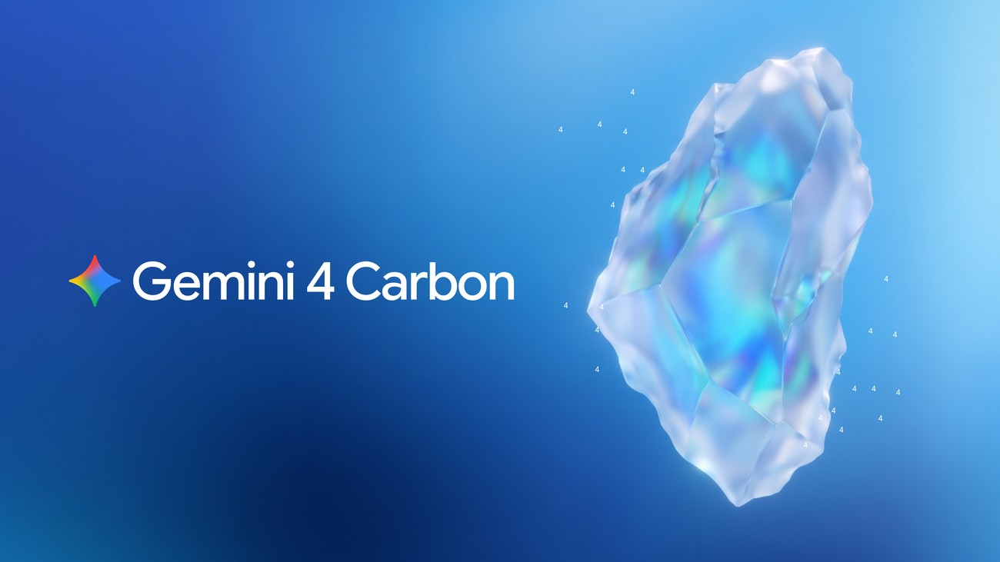
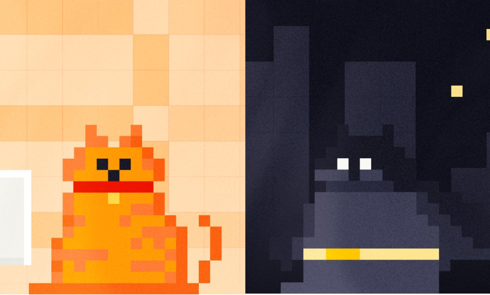
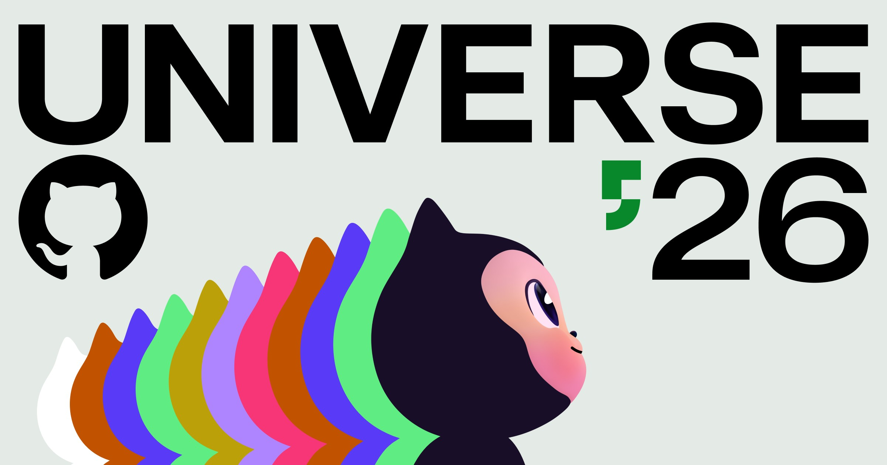
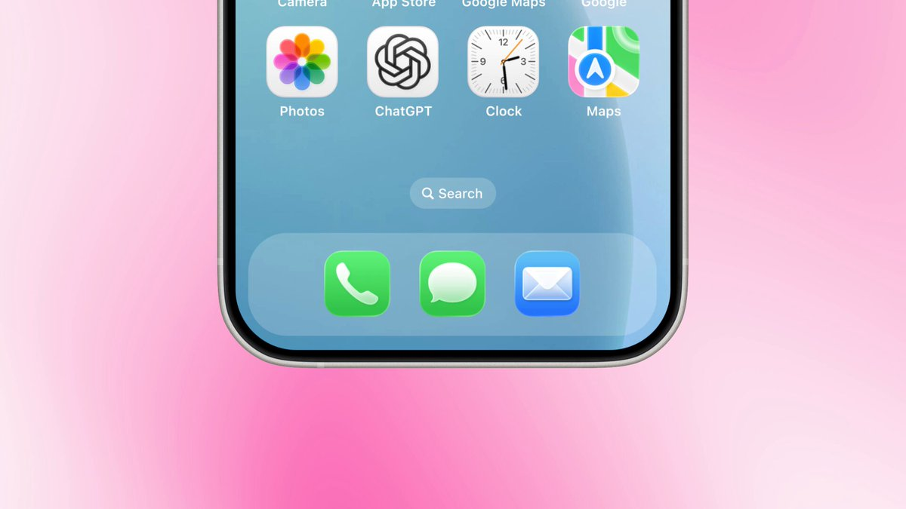
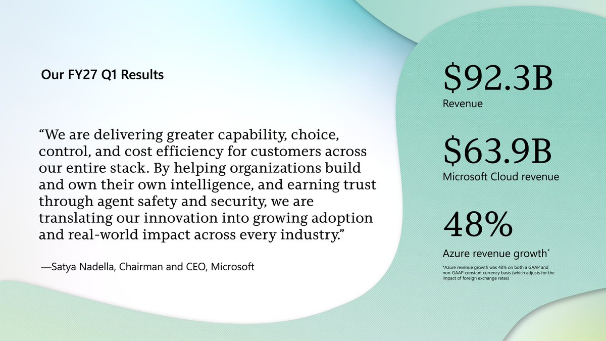

01模型 头条
Google 发布 Gemini 4 Carbon：AA Index v5 登顶，网络安全三基准领先
10-29 01:01 北京时间周四头条 · 高互动官帖独立来源 5 家

Gemini 4 Carbon 官宣封面（来源：blog.google / OG）
介绍
北京时间 10-29 01:01–01:02（UTC 10-28 17:01），@sundarpichai 与 @GoogleDeepMind 同步发布 Gemini 4 Carbon：官博称其在更新后的 Artificial Analysis Intelligence Index v5.0 以 59 分登顶；网络安全侧 SEC-bench Pro 88.2%（找漏洞）、ExploitGym 54.8%（利用）、CWE-bench 71.0%（修补）取得领先。API 引入价与 Argon 同档：$2 / $10（每百万 input/output tokens，缓存 input 约 95% off），引入期结束后为 $4 / $20。先向 Fairwind Program 可信伙伴开放并继续收紧护栏。Verge 交叉报道「网络安全显著跃升」；AIHOT 列为 10-29 日报头条（另 16 家跟进）。
为什么重要
前沿模型叙事从「通用智能分数」切到「可发现/利用/修补漏洞」——安全评测成为下一轮军备赛的公开计分板。
要点
- 排行：Artificial Analysis Intelligence Index v5.0 #1 · 59 分（官博）
- 安全三基准：SEC-bench Pro 88.2% · ExploitGym 54.8% · CWE-bench 71.0%
- 定价：引入 $2/$10 → 期满 $4/$20（每百万 tokens）；Fairwind 先开放
- 交叉：@sundarpichai + @GoogleDeepMind + blog.google + Verge + AIHOT
02开源未证实项
Mistral Large 4（Le Chonk）开源权重：约 1T MoE，FrontierCode 开源领先
10-29 22:21 北京时间开源权重日 · 官帖+官博+HF独立来源 5 家

Mistral Large 4 / Le Chonk 官宣图（来源：@MistralAI / X）
介绍
北京时间 10-29 22:21（UTC 14:21），@MistralAI 宣布 Mistral Large 4（Le Chonk） 权重开源：官博称其为约 1-trillion-parameter 多模态模型；FrontierCode 19.7% 开源领先，Terminal-Bench 相对公开预览提升 13 个百分点至 41%，Artificial Analysis Coding Agent Index ~48%（与领先开源模型基本持平、平均少用约 47% tokens），AA Cyber Index 51%。API 价 $0.70 / $2.10（input/output 每百万 tokens，缓存 input $0.07）。Hugging Face 博客写 约 1T total / 49B active / 1M context，模型卡 id 为 Mistral-Large-4-1T-A52B（激活参数口径 49B vs A52B 并存，正文并列注明）。同窗 Unsloth 放出 Dynamic 1-bit GGUF（约 233GB）。
为什么重要
把「接近闭源编码代理」的开源权重和可量化本地跑通绑在同一天——开源前沿的交付形态从卡表分数扩到可下载、可跑。
要点
- 规模：约 1T 总参 MoE 多模态；HF 写 49B active / 1M context（模型卡 A52B）
- 编码：FrontierCode 19.7% 开源第一 · Terminal-Bench 41% · AA Coding Agent ~48%
- 安全与价格：AA Cyber Index 51% · API $0.70/$2.10；Unsloth 1-bit GGUF 同窗
- 交叉：@MistralAI + mistral.ai OSS + HF blog + AIHOT + Unsloth
⚠ 激活参数：HF 正文写约 49B active，模型 id / Unsloth 常用 A52B 口径——并列注明，未单选一侧
03财报未证实项
Alphabet Q3：年化 run rate 半万亿，Cloud +103%；Search 变现承压跟进
10-29 04:05 北京时间财报日 · CEO 官帖独立来源 4 家

Alphabet Q3 业绩配图（来源：blog.google / OG）
介绍
北京时间约 10-29 04:05，@sundarpichai 发布 Alphabet Q3 业绩口径：官博称收入同比 +25%，年化 run rate 达 half-trillion-dollar（约 $500B）；Google Cloud +103%，AI 基础设施与方案是主要驱动；Search 查询同比增速为五年来最高，并点到 Argon/Carbon 与 Genie 4。同窗 AIHOT/DECODER 跟进：投资者担忧 AI Mode 查询增长但变现率较低，Search 收入增速约 12%、低于部分预期约 15%（媒体转述，非官博原文）。
为什么重要
一边是 Cloud 三位数增长与半万亿 run rate，一边是 AI 搜索「量增利薄」——广告变现能否跟上聊天式查询，成为下一季的核心对赌。
要点
- 总盘：收入 +25% · 年化 run rate ~$500B（half-trillion，官博）
- Cloud：+103%；AI 基础设施与解决方案为主要驱动
- 张力：Search 查询五年最快 vs AI Mode 变现率偏低（媒体跟进口径）
- 交叉：@sundarpichai + blog.google + AIHOT（含 DECODER 跟进）
⚠ Search 增速不及预期等细节以 THE DECODER 报道与 AIHOT 转述为准，非 Alphabet 官博原文；以官博 +25% / Cloud +103% / half-trillion 为准
04产品
GitHub Universe：Copilot Fusion Max 距 Opus 5.5 Max 两分内、约一半成本
10-29 00:25 北京时间Universe 发布日独立来源 3 家

GitHub Universe 2026 封面（来源：github.blog / OG）
介绍
北京时间 10-29 00:25（UTC 10-28 16:25，落入本窗），@github 推进 Universe 2026 产品线：Changelog 称在 Artificial Analysis Coding Agent Index 上 Copilot Fusion Max 得分 60，距 Claude Code with Opus 5.5 Max within two points，且约 一半平均 API 成本、约一半 tokens、约 少 40% 单任务耗时。Universe 博文同步推出 Copilot app / projects / automations，并称 GitHub Enterprise 客户可自即日起使用全部 Copilot 功能、无需单独 enterprise Copilot 订阅。同窗 Microsoft 经 Foundry 开放 GitHub 团队打造的 Copilot harness。
为什么重要
多模型编排第一次用公开代理指数和「半价近 Opus」同时说话——IDE 厂商把路由层本身做成产品。
要点
- Fusion Max：AA Coding Agent 60 · 距 Opus 5.5 Max 两分内 · ~1/2 成本 · ~−40% 耗时
- 产品面：Copilot app · projects · automations；多模型路由可企业策略管控
- 商业：Enterprise 可免单独 Copilot 订阅使用全功能；Foundry 开放 harness
- 交叉：@github + Universe 博文 + Fusion Changelog + AIHOT
05产品未证实项
ChatGPT：Text your Dot 上线；API credits 提升至最高约 $500/月
10-29 01:30 / 08:26 北京时间产品双更 · 高互动独立来源 2 家

ChatGPT Text your Dot 演示封面（来源：@ChatGPT / X）
介绍
北京时间 10-29 01:30，@ChatGPT 宣布 Text your Dot：可用短信等方式触达个人 Dot 助手（官帖约 7.7k 赞）。同日 08:26 再发帖称开发者 API credits 额度上调，最高约 $500/月（以官帖表述为准）。AIHOT 近 7 日精选未单独收录这两条；交叉以 @ChatGPT 第二条官帖 + chatgpt.com/dots 产品页为准（帮助中心 403）。
为什么重要
个人助手从 App 内走到短信入口，同时抬高 API 月度 credits——消费级触达与开发者用量同一天加码。
要点
- Text your Dot：短信等通道触达个人 Dot（官帖口径）
- API credits：最高约 $500/月（@ChatGPT 官帖）
- 互动：Text your Dot 帖约 7.7k 赞，本窗公开账号互动前列
- 交叉：@ChatGPT 两条官帖；AIHOT 未单列 → flags 注明
⚠ AIHOT 近 7 日搜索未命中 Text your Dot / API credits；$500/月口径以 @ChatGPT 官帖为准，帮助中心抓取 403
06财报未证实项
微软财报：Microsoft Cloud 收入超 $63B、同比 +30%；Foundry 开放 Copilot harness
10-29 06:53 北京时间财报 + Agent 栈独立来源 3 家

Satya Nadella 财报相关配图（来源：@satyanadella / X 卡片）
介绍
北京时间 10-29 06:53，@satyanadella 总结财报电话会：称财年开局强劲，Microsoft Cloud 收入超过 $63B，同比增速加快至 30%；并强调围绕 agentic 浪潮构建新技术栈。同窗 AIHOT 收录 Microsoft 经 Foundry 向开发者/企业开放 GitHub 团队打造的 Copilot harness（已驱动 Copilot Code / Studio / GitHub Copilot app / CLI 等）。IR 完整新闻稿本次抓取超时/403，金额以 Satya 官帖与 AIHOT 交叉为准，未写入未核验的营收总额。
为什么重要
Cloud 六千亿级季度与「把 Copilot harness 当平台卖」叠在一起——微软把 Agent 运行时本身产品化。
要点
- Cloud：收入 >$63B · 同比 +30%（@satyanadella）
- Agent 栈：Foundry 开放 Copilot harness；对接 Copilot Code / Studio / app / CLI
- 同日配套：GitHub Universe / Fusion / Enterprise Copilot 打包叙事
- 交叉：@satyanadella + AIHOT（财报+Foundry）+ GitHub 官博
⚠ Microsoft IR / blogs.microsoft.com 本次超时或 403，未写入未核验的总营收等额外数字；以 Satya 官帖 Cloud >$63B +30% 为准
07产业未证实项
Verge 深读 Anthropic S-1：约 $850B 算力承诺押注「递归自我改进」
10-29 21:30 北京时间媒体深读 · 新角度独立来源 2 家
The Verge S-1 深读配图（来源：The Verge / OG）
介绍
北京时间约 10-29 21:30，The Verge 依据 S-1 长文分析：作者写道展望「未来 20 年至少约 $850 billion 的承诺」，并可能升至约 一万亿量级；公司收入在 2025 H1 至 2026 H1 间增至约 $16.3 billion（十四倍口径为报道表述）。文章核心论点是业务计划高度依赖戏剧性递归自我改进是否成真——若怀疑该前提，这份扩张账单会换一种读法。本条是相对昨日「Amazon 最大赢家」的新叙事角度，非 S-1 首次披露复读。
为什么重要
把 IPO 文件读成「算力军备是否押对递归自改进」——资本市场第一次用千亿级承诺给 AGI 时间表标价。
要点
- 承诺：报道称约 $850B / 20 年 compute 承诺下限（可能升至 ~$1T）
- 增长：H1 收入约 $16.3B（Verge 对 S-1 转述）
- 论点：业务计划依赖戏剧性 recursive self-improvement 是否成立
- 交叉：The Verge + AIHOT 快讯；对照昨日 Amazon 角度不重做头条
⚠ 金额与倍数均为 The Verge 对 S-1 的解读/转述，非 Anthropic 官宣口径；「递归自我改进」为作者论证框架
08硬件未证实项
Apple 发布 PROLED 触控 MacBook Pro：2000 nits，14″ 起售 $2,899
Newsroom 10-28 / 窗内媒体 10-29 北京时间硬件 · 触控首次上 Mac独立来源 3 家

MacBook Pro with PROLED XDR（来源：Apple Newsroom / OG）
介绍
Apple Newsroom（标注 October 28, 2026）发布搭载 PROLED XDR Display 的新款 MacBook Pro：tandem OLED，最高 2000 nits 峰值亮度、10,000,000:1 对比度，首次在 Mac 引入 Touch，并带来 Dynamic Island；搭载 M5 Pro / M5 Max。14 英寸起售 $2,899（教育 $2,749）；10 月 28 日起预购，11 月 6 日发售。本条以窗内媒体/AIHOT 跟进（indigo 10-29 05:21）入选，勿与昨日 M6 $1,999 主线混同。
为什么重要
把触控和桌面级 OLED 一次性塞进 Pro 本——端侧创作硬件的交互假设被苹果自己改写。
要点
- 屏幕：PROLED XDR · ≤2000 nits · 10M:1 · 120Hz · Dynamic Island
- 交互：Mac 首次 Touch；M5 Pro / M5 Max
- 价格与节奏：14″ 起售 $2,899 · 预购 10-28 · 发售 11-6
- 交叉：Apple Newsroom + AIHOT + @indigox 窗内跟进；区别于 10-28 M6 条
⚠ Newsroom 日期为 Oct 28；以 10-29 窗内媒体/AIHOT 跟进时间入选。勿与 10-28 主线「M6 14″ $1,999」混读
AIHOT 日报 10-29 + 10-30（按条目时间筛入本窗）读到
Carbon/Universe/Alphabet/微软/Foundry/MiniCPM 入窗；Mistral OSS/Verge S-1/Unsloth 在 10-30 日报但条目时间落本窗；Codex 翻倍标窗外
X 公开数据（官方账号原推）读到
@sundarpichai Carbon+Q3、@GoogleDeepMind Carbon、@MistralAI Large4、@github Fusion、@ChatGPT Dot+credits、@satyanadella 财报
你在窗口内发的推文（@HhhharryRen）读到 · 没更新
接口正常，窗口内 0 条
你的 X 收藏读到 · 没更新
可读 33 条；窗口内 0 条 AI 资讯新书签
WaytoAGI 飞书知识库读到
10-29 共 4 条：线性注意力 / Personal Agent / Opus 5.5 Harness / 评估框架
官方页面核对读到
blog.google Carbon + Alphabet Q3；mistral.ai OSS；HF Large4；github Universe + Fusion Changelog；Apple Newsroom PROLED
媒体交叉读到
Verge（Carbon + S-1 $850B）；AIHOT/DECODER（Search 变现、Huang 报道）
窗外条目读到
Nemotron 3.5 窗前约 45min；Codex 用量翻倍在窗后；不入主线